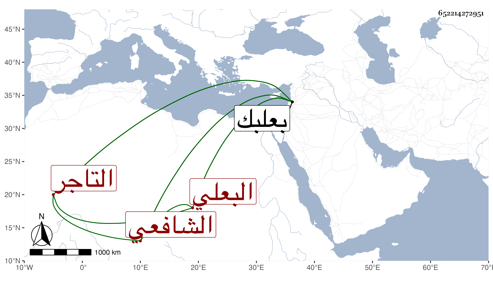

0902Sakhawi.DawLamic.ITO20230111-ara1.EIS1600.652214272951
Biography ID: 652214272951
إبراهيم بن حسين بن محمد برهان الدين البعلي الشافعي التاجر ويعرف بابن العجمي ولد سنة أربع وثمانين وسبعمائة ببعلبك ونشأ بها فقرأ القرآن على قاضي المنيظرة واشتغل عند ابن السقيف وغيره وسمع البخاري على الزين عبد الرحمن ابن الزعبوب إمامة الحجاز ولقيته ببعلبك فقرأت عليه الثلاثيات منه وقد حج وكان خيرا يتجر في البرمات في .
